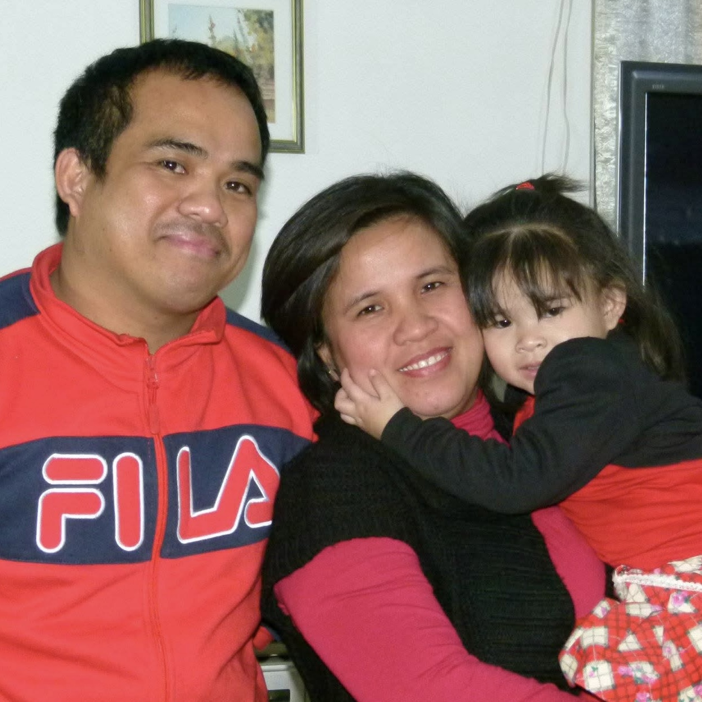
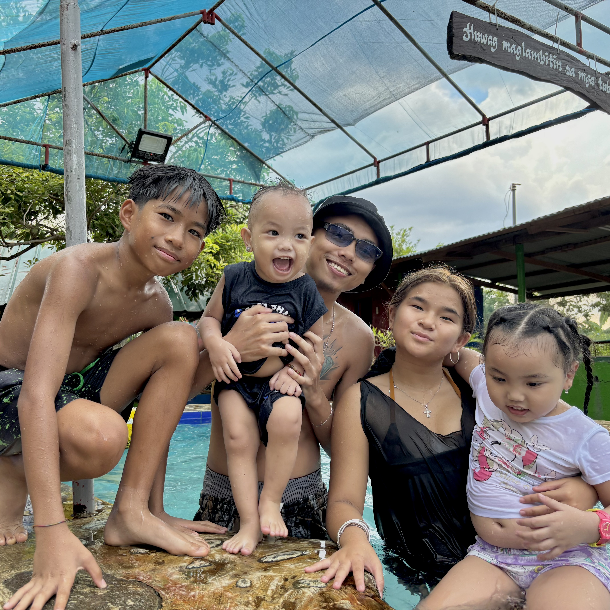
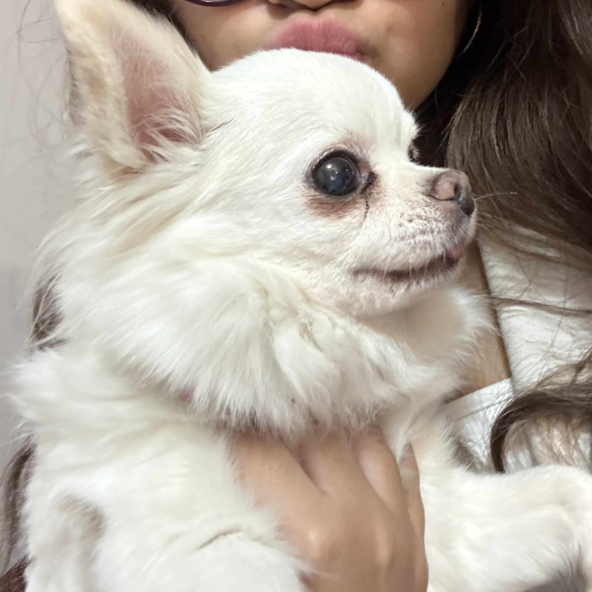
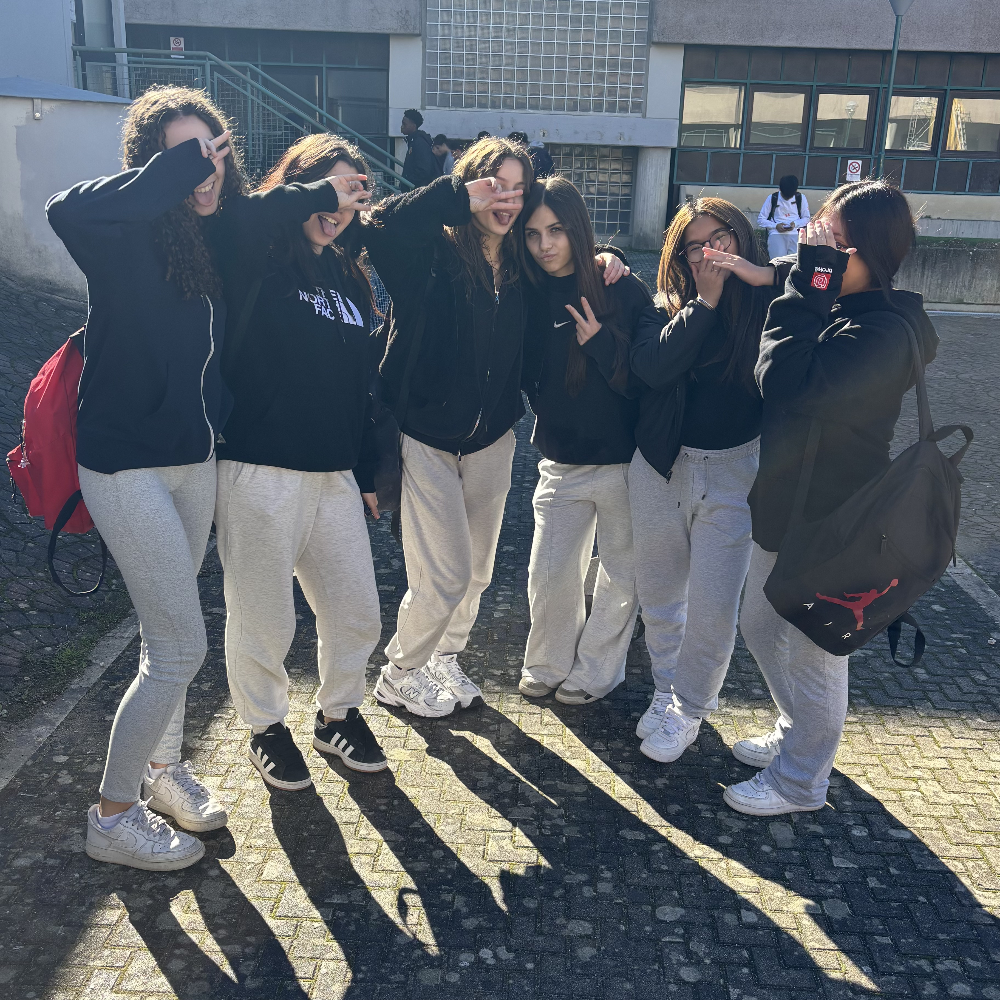
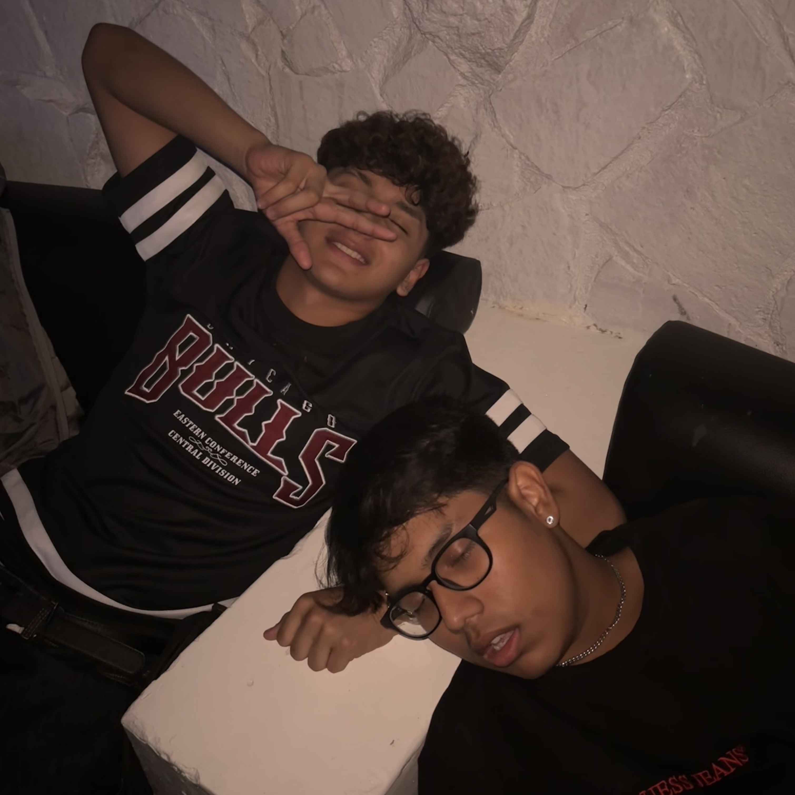
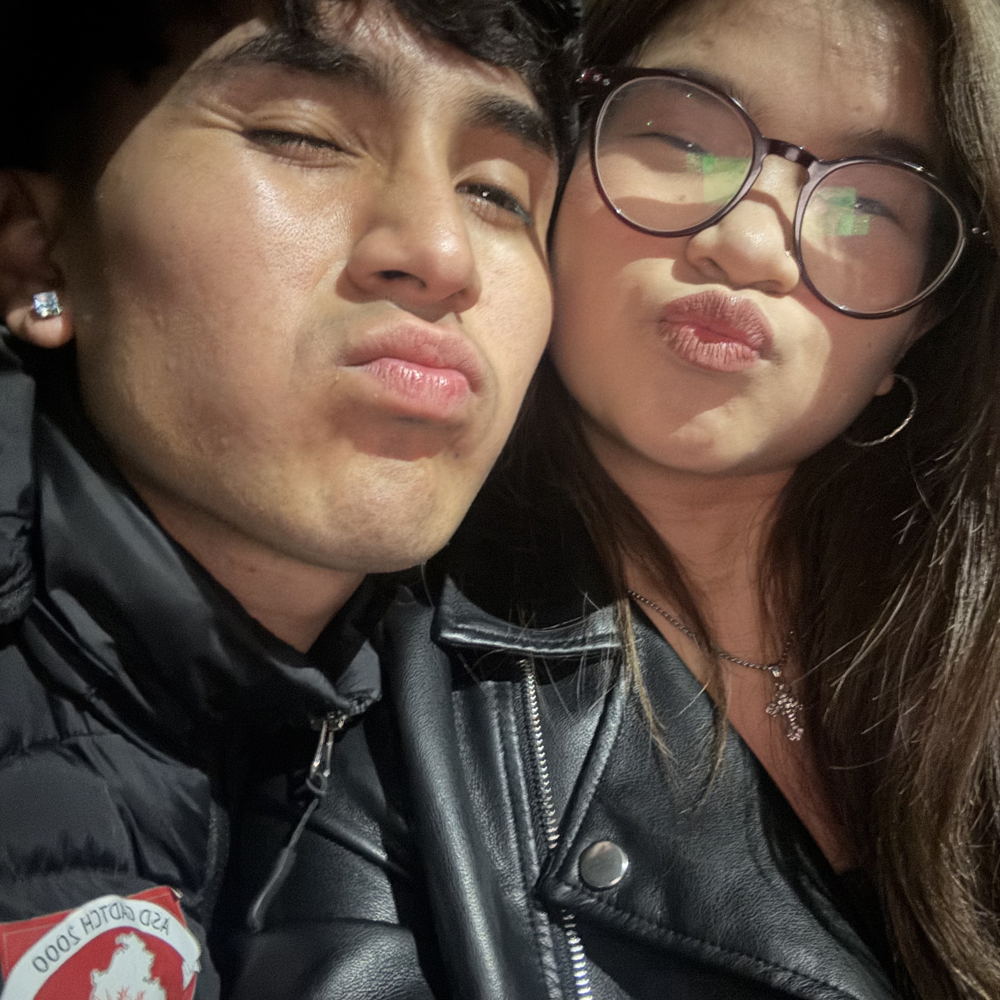

Chi sono?
Mi chiamo Rain Lime Angeline Pantoja (ma gli amici mi chiamano Angi),ho 17 anni e il mio compleanno è il 30 Gennaio, sono filippina ma sono nata e cresciuta a Perugia. Sono bassa 1 metro e 48, infatti mi dicono di essere alta "un metro e un tappo". Sono una ragazza introversa ma se mi conosci per bene non mi tieni più a bada e sono sempre disponibile. Ho due fratelli, ma abito solo con i miei genitori e il mio fratellino perchè il più grande si trova nelle Filippine. Ho anche due nipotini grazie a mio fratello. Avevo anche un chihuahua di nome Chelsey (ma mia nonna me lo rubato >:c).



Cosa faccio?
Durante la settimana non faccio niente di che, dopo scuola esco con le mie compagne di classe (o Dyland del 3asia che piace alla Valentina); se resto a casa faccio i compiti e dormo. Il sabato di solito esco con i miei amici e il mio fidanzato in centro o al Timbalero e qualche volta vado anche al gherlinda/borgonovo per guardare un film e giocare a biliardo. La domanica mattina studio e pulisco la mia stanza poi il pomeriggio vado a casa del mio fidanzato e ci resto fino la sera (purtroppo,vivrei pure con lui ma lui non mi sopporta più).



Dove e cosa studio?
Io prima studiavo al Liceo Assunta Pieralli e facevo scienze umane ma poi a marzo del 2025, in secondo, ho deciso di cambiare scuola. Adesso studio all'ITET Aldo Capitini e faccio l'indirizzo RIM. Penso che aver cambiato scuola sia stata una delle decisioni migliori della mia vita.